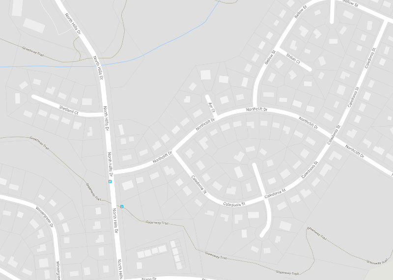
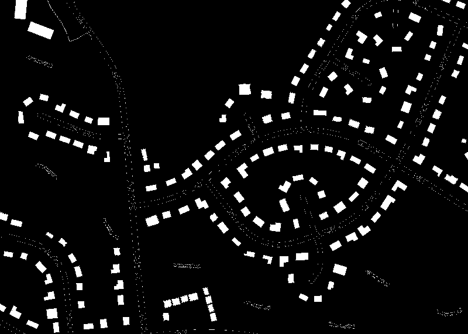
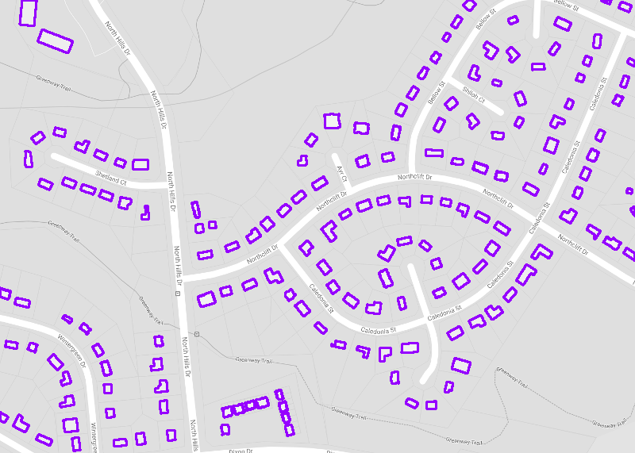
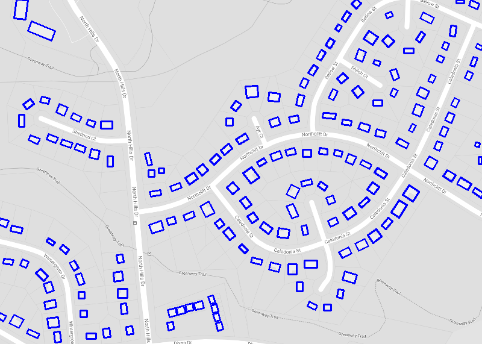
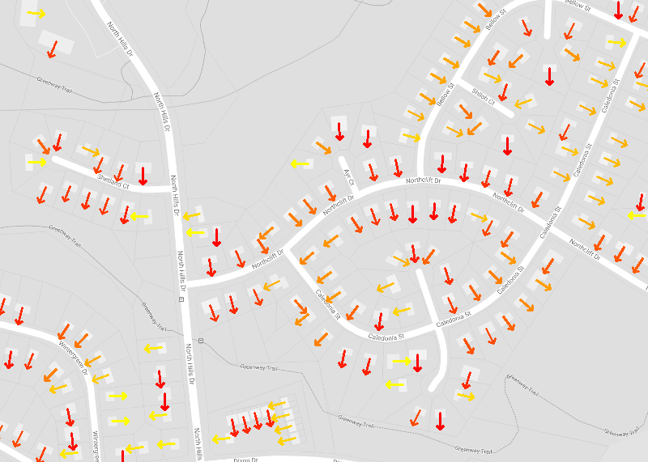
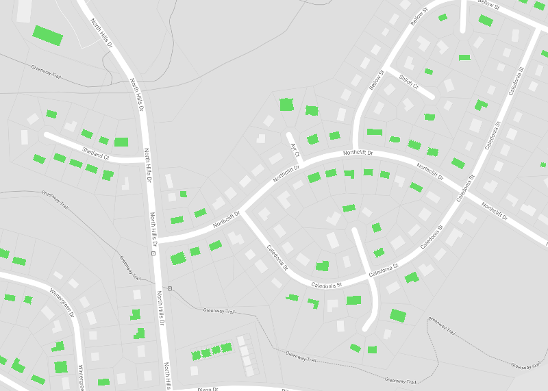

Solar panels are most effective and provide the best return on investment when aimed towards the equator (e.g., facing true south for those of us in the Northern Hemisphere). For residential buildings with pitched roofs, the easiest, cheapest and most elegant mounting method is to align the panels with the roof. Therefore, homes with roofs facing nort-south are the best candidates for the addition of solar panels. For solar energy providers, these are the ideal customers for direct marketing campaigns. A personalized proposal could be generate by combining the orientation of each building with available roof area and local, historic solar insolation data for to estimate annual energy production. This page shows representative output from an automated tool to identify these homes. The code used to generate these images can be found at https://github.com/bryanpeele/building-orientation Output for four different neighborhoods can be selected by clicking the tabs above.
For this prototype, static images with clear building outlines are obtained from Google Maps. For future iterations, a more comprehensive tool could be developed using the Google Maps API.
After the raw image has been selected, a threshold is applied based on color to identify buildings.
From this thresholded image, buildings are identified with contours shown in purple. A minimum area is specified by the user to remove noise present in the thresholded image.
For each of the contours, a rectangle is fit to best approximate the shape of the building. For complex building shapes (e.g., L-shaped), a more sophisticated fitting method would improve results.
An arrow is drawn along the minor axis of the rectangle, facing as close to true south as possible. Buildings facing true south are shown with red arrows. Yellow arrows are used for buildings least suited for solar energy collection.
Finally, the buildings with the potential to product the most solar energy are highlighted in green. In this case, building facing within 30° are selected.
